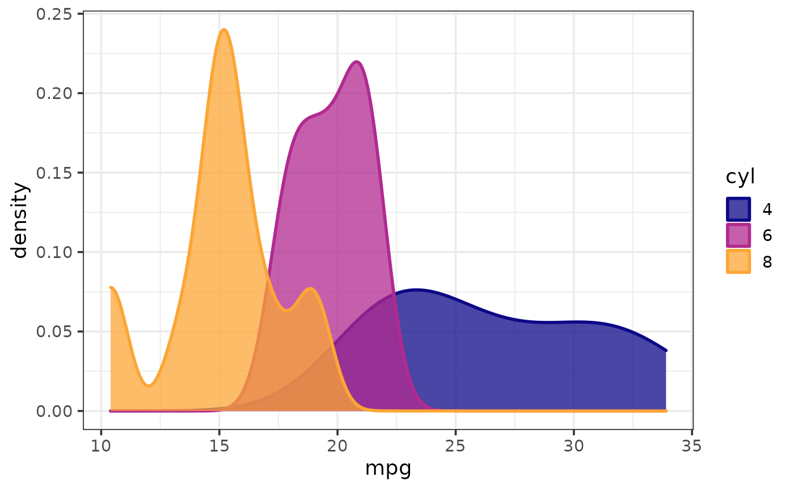
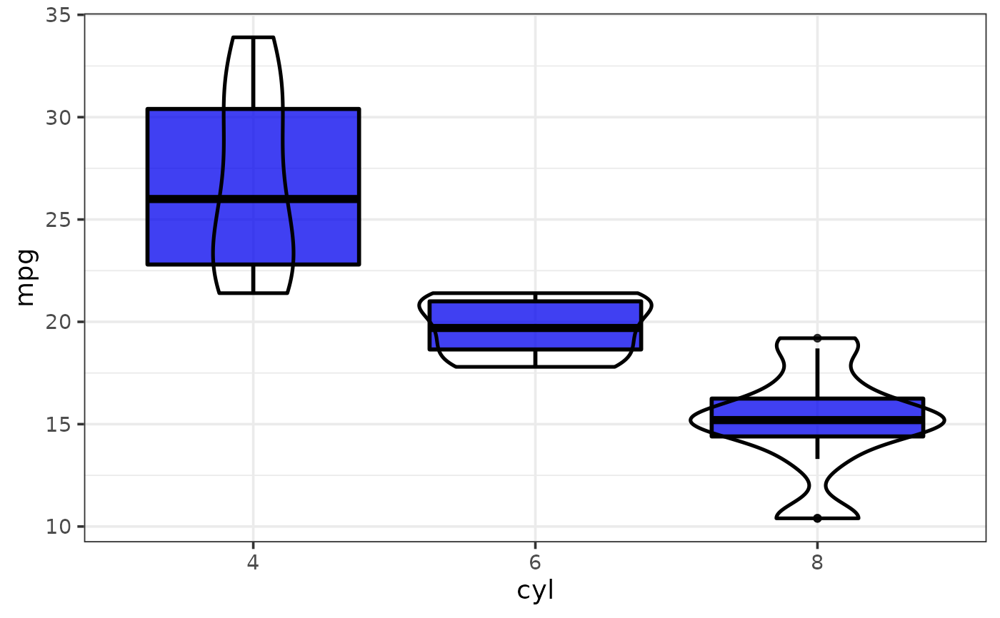

Easily generate a ggplot2 graph using a class-appropriate
geometry for the chosen primary (required) and secondary (optional)
variable(s) from the same data frame source using other elucidate plot_*
functions with a restricted set of customization options and some modified
defaults. See "Arguments" section for details and
this
blog post for an introduction to ggplot2. To obtain plots of all
variables/columns of a data frame, use plot_var_all or
plot_var_pairs instead.
plot_var(
data,
var1 = NULL,
var2 = NULL,
group_var = NULL,
var1_lab = ggplot2::waiver(),
var2_lab = ggplot2::waiver(),
title = ggplot2::waiver(),
caption = ggplot2::waiver(),
fill = "blue2",
colour = "black",
palette = c("plasma", "C", "magma", "A", "inferno", "B", "viridis", "D", "cividis",
"E"),
palette_direction = c("d2l", "l2d"),
palette_begin = 0,
palette_end = 0.8,
alpha = 0.75,
greyscale = FALSE,
line_size = 1,
theme = c("classic", "bw", "grey", "light", "dark", "minimal"),
text_size = 14,
font = c("sans", "serif", "mono"),
legend_position = c("right", "left", "top", "bottom"),
omit_legend = FALSE,
dnorm = TRUE,
violin = TRUE,
var1_log10 = FALSE,
var2_log10 = FALSE,
point_size = 2,
point_shape = c("circle", "square", "diamond", "triangle up", "triangle down"),
regression_line = TRUE,
regression_method = c("gam", "loess", "lm"),
regression_se = TRUE,
bar_position = c("dodge", "fill", "stack"),
bar_width = 0.9,
basic = FALSE,
interactive = FALSE,
verbose = FALSE
)Either a data frame containing variables to be plotted or a
vector to be plotted (unlike most other plot_* functions, which always
require a data frame). Note that if a vector is supplied here, arguments
var1, var2, and/or group_var cannot also be used.
The name of the primary variable you want plot(s) for (quoted or
unquoted), e.g. var1 = "variable" or var1 = variable. If a data frame is
supplied to the data argument, then var1 must also be specified. var1
will be assigned to the x-axis if var2 is not specified. If var2 is
also specified, var1 will be assigned to the y-axis if it is a numeric,
integer, or date variable or to the x-axis if it is a factor, character, or
logical variable.
The name of a secondary variable to plot against the primary
variable (quoted or unquoted), e.g. var2 = "variable" or var2 = variable.
var2 is usually assigned to the x-axis. However, if var1 is a
categorical (factor, character, or logical) variable and var2 is a
numeric, integer, or date variable, var2 will be assigned to the y-axis
and var1 will be assigned to the x-axis. If var1 and var2 are both
categorical variables, var1 will be assigned to the x-axis and var2
will be assigned to facet_var.
Use if you want to assign a grouping variable to fill
(colour) and/or (outline) colour e.g. group_var = "grouping_variable" or
group_var = grouping_variable. Whether the grouping variable is mapped to
fill, colour, or both will depend upon which plot_* function is used (See
"Value" section). For density plots, both fill and colour are used for
consistency across the main density plots and added normal density curve
lines (if dnorm = TRUE). For bar graphs and box-and-whisker plots, the
variable will be assigned to fill. For scatter plots, the variable will be
assigned to colour. See aes for details.
Accepts a character string to use to change the axis label
for the variable assigned to var1.
Accepts a character string to use to change the axis label
for the variable assigned to var2. Ignored if var1 and var2 are both
categorical variables (since var2 will be used for faceting in such
cases).
A character string to add as a title at the top of the graph.
Add a figure caption to the bottom of the plot using a character string.
Fill colour to use for density plots, bar graphs, and box plots.
Ignored if a variable that has been assigned to group_var is mapped on to
fill_var (see group_var argument information above). Default is
"blue2". Use colour_options to see colour option examples.
Outline colour to use for density plots, bar graphs, box plots,
and scatter plots. Ignored if a variable that has been assigned to
group_var is mapped on to colour_var (see group_var argument
information above). Default is "black". Use colour_options to
see colour option examples.
If a variable is assigned to group_var, this determines which viridis colour palette to use. Options include "plasma" or "C" (default), "magma" or "A", "inferno" or "B", "viridis" or "D", and "cividis" or "E". See this link for examples.
Choose "d2l" for dark to light (default) or "l2d" for light to dark.
Value between 0 and 1 that determines where along the
full range of the chosen colour palette's spectrum to begin sampling
colours. See scale_fill_viridis_d for details.
Value between 0 and 1 that determines where along the full
range of the chosen colour palette's spectrum to end sampling colours. See
scale_fill_viridis_d for details.
This adjusts the transparency/opacity of the main geometric objects in the generated plot, with acceptable values ranging from 0 = 100% transparent to 1 = 100% opaque.
Set to TRUE if you want the plot converted to grey scale.
Controls the thickness of plotted lines.
Adjusts the theme using 1 of 6 predefined "complete" theme
templates provided by ggplot2. Currently supported options are: "classic"
(the elucidate default), "bw", "grey" (the ggplot2 default), "light",
"dark", & "minimal". See theme_classic for more
information.
This controls the size of all plot text. Default = 14.
This controls the font of all plot text. Default = "sans" (Arial). Other options include "serif" (Times New Roman) and "mono" (Courier New).
This allows you to modify the legend position if a
variable is assigned to group_var. Options include "right" (the default),
"left", "top", & "bottom".
Set to TRUE if you want to remove/omit the legend(s).
Ignored if group_var is unspecified.
When TRUE (default), this adds a dashed line representing a
normal/Gaussian density curve to density plots, which are rendered for
plots of single numeric variables. Disabled if var1 is a date vector,
var1_log10 = TRUE, or basic = TRUE.
When TRUE (default), this adds violin plot outlines to box
plots, which are rendered in cases where a mixture of numeric and
categorical variables are assigned to var1 and var2. Disabled if
basic = TRUE.
If TRUE, applies a base-10 logarithmic transformation to a
numeric variable that has been assigned to var1. Ignored if var1 is a
categorical variable.
If TRUE, applies a base-10 logarithmic transformation to a
numeric variable that has been assigned to var2. Ignored if var2 is a
categorical variable.
Controls the size of points used in scatter plots, which
are rendered in cases where var1 and var2 are both numeric, integer, or
date variables.
Point shape to use in scatter plots, which
are rendered in cases where var1 and var2 are both numeric, integer, or
date variables.
If TRUE (the default), adds a regression line to scatter
plots, which are rendered in cases where var1 and var2 are both
numeric, integer, or date variables. Disabled if basic = TRUE.
If regression_line = TRUE, this determines the
type of regression line to use. Currently available options are "gam",
"loess", and "lm". "gam" is the default, which fits a generalized additive
model using a smoothing term for x. This method has a longer run time, but
typically provides a better fit to the data than other options and uses an
optimization algorithm to determine the optimal wiggliness of the line. If
the relationship between y and x is linear, the output will be equivalent
to fitting a linear model. "loess" may be preferable to "gam" for small
sample sizes. See stat_smooth and
gam for details.
If TRUE (the default), adds a 95% confidence envelope for the
regression line. Ignored if regression_line = FALSE.
In bar plots, which are rendered for one or more
categorical variables, this determines how bars are arranged relative to
one another when a grouping variable is assigned to group_var. The
default, "dodge", uses position_dodge to arrange
bars side-by-side; "stack" places the bars on top of each other; "fill"
also stacks bars but additionally converts y-axis from counts to
proportions.
In bar plots, which are rendered for one or more categorical variables, this adjusts the width of the bars (default = 0.9).
This is a shortcut argument that allows you to simultaneously
disable the dnorm, violin, and regression_line arguments to produce a
basic version of a density, box, or scatter plot (depending on
var1/var2 variable class(es)) without any of those additional layers.
Dropping these extra layers may noticeably reduce rendering time and memory
utilization, especially for larger sample sizes and/or when interactive =
TRUE.
Determines whether a static ggplot object or an
interactive html plotly object is returned. See
ggplotly for details. Note that in cases where a box
plot is generated (for a mix of numeric and categorical variables) and a
variable is also assigned to group_var, activating interactive/plotly
mode will cause a spurious warning message about 'layout' objects not
having a 'boxmode' attribute to be printed to the console. This is a
documented bug with
plotly that can be safely ignored, although unfortunately the message
cannot currently be suppressed.
If TRUE, this causes a message to be printed to the console
informing you of the classes detected for variables assigned to any of
var1, var2, and/or group_var as well as which arguments those
variables are passed to in the underlying geom-specific elucidate plot_*
function that is used to render the plot.
A ggplot or plotly graph depending on whether static or interactive
output was requested. The type of graph (i.e. ggplot2::geom* layers) that
is rendered will depend upon the classes of the chosen variables, as
follows:
One numeric (classes numeric/integer/date) variable will be graphed with
plot_density.
One or two categorical (classes factor/character/logical) variable(s)
will be graphed with plot_bar.
Two numeric variables will be graphed with plot_scatter.
A mixture of numeric and categorical variables will be graphed with
plot_box.
Wickham, H. (2016). ggplot2: elegant graphics for data analysis. New York, N.Y.: Springer-Verlag.
data(mtcars) #load the mtcars data
#convert variables "cyl" and "am" to a factors
mtcars$cyl <- as.factor(mtcars$cyl)
mtcars$am <- as.factor(mtcars$am)
# density plot of a single numeric variable on the x-axis
# with normal density curve added as dashed line
#
# normal density curves can be disabled via `dnorm` = FALSE or `basic` = TRUE
plot_var(data = mtcars, var1 = mpg)
# density plot with a primary numeric variable on the x-axis
# split by a categorical grouping variable assigned to the `fill_var`
# argument of plot_density() & normal density curves distabled
plot_var(mtcars, mpg, group_var = cyl, dnorm = FALSE)

plot_var(mtcars, cyl) #bar plot of a single categorical variable on x-axis
# bar plot with a primary categorical variable on the x-axis and a secondary
# categorical variable used for faceting.
plot_var(mtcars, var1 = cyl, var2 = am)
# box plot with added violin plots for a mix of numeric and categorical variables
# and verbose mode enabled to print variable assignment information to the console
#
# the violin plots can be disabled via `violin` = FALSE or `basic` = TRUE
plot_var(mtcars, mpg, cyl, verbose = TRUE)
#> `var1` class = "numeric" and `var2` class = "factor".
#> Building graph with `plot_box()`.
#> Assigning `var1` to `y` and `var2` to `x`.
#> Use `plot_box()` instead to access additional customization options.
#> See help("plot_box") for details.

# scatter plot with added generalized additive model regression line and
# 95% confidence envelope for two numeric variables
#
# N.B. the regression line and CI can be disabled via `regression_line` = FALSE or
# `basic`= TRUE
plot_var(mtcars, mpg, hp)